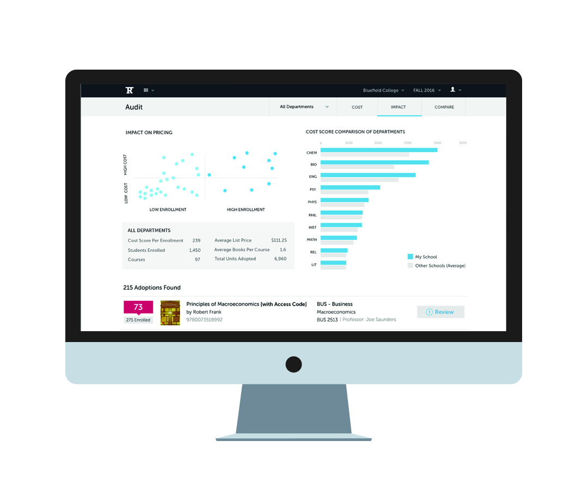
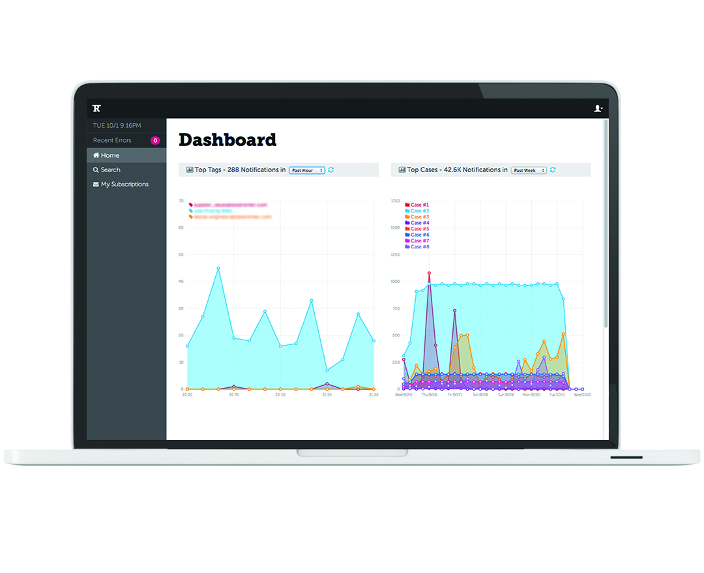

-  Rafter Insight
-  Application Notifier
- Book Adoption Analysis
- Inventory Management
- Help & Error Modules
- Book Adoption Experience Survey
Rafter360 Insight
The purpose of this project was to create a simple way for our clients (colleges and universities) to do a cost breakdown analysis of their adopted books and find a solution to reduce cost.
Company Background
Rafter improves overall college access and affordability by making the cost of educational content a budgeted and predictable expense through a flat-rate access fee.
My role: As an end-to-end designer, I worked on on every aspect of the product development process. I was responsible for defining the problem, brainstorming with other team members on the solution, creating wireframes, organizing visual data, creating interaction, doing some visual design, prototyping, coding HTML & CSS and making the site responsive. I worked closely with the engineering team and a product manager to move the project forward and participated in customer meetings with the school's Provosts and CFO's.
1. Define the problem
The Business Challenge: When coming up with a flat fee for students, the schools had to estimate how much they should charge their students. The schools did not have a simple way to view the cost breakdown of their adopted books, nor could they find a way to reduce the cost easily.
The User Challenge: We had lots of data that we could show, but the user wanted to see relevant data without being overwhelmed. The user wanted an easy way to reduce the cost of the adopted books.
2. Explore solutions
In our research phase, we interviewed our schools’ provosts and CFOs about their current process for determining their content prices. We collected and analyzed the schools’ textbook adoptions data. We held brainstorm sessions, tried to find analogy products, and created personas.
The analogy products that we came up was FICO scores (credit karma). We wanted to rate each book and how the school is doing similar to the credit scores. The scores impacted the cost of the materials and how the schools are going to pay for their signed contract.
We also thought that comparing cars was a good analogy for the cost analysis that we can provide for our customers. We already had a dashboard where we showed the schools their guardrails and how they are doing historically. But we could show more relevant information for them.
3. Early Sketches

This one example of the storyboard I created for this project. The point of the storyboard is to get an idea of how the users would use the app in an everyday environment.
If I can imagine the personas using the app and how they interact with the app every day, I can better understand the user and make a tailored user experience.
I decided to make sketches for the initial wireframes. I wanted to capture what kind of data we wanted to show to the user and have an idea of how to organize and reveal the information architecture. The wireframes also allowed us to talk about if we are going in the right direction and how we want to move the project.

This is the flow diagram that I presented to the developers, so they can see how the pages are linked and organized. This was a separate Saas app. The user would land on the dashboard (or landing page), then they would pick from three choices - prise estimate, audit, and toolkit modules. Each module would go the pages or information presented on the diagram.
After wireframe critique and discussions, I created these medium-fidelity mock-ups. I decided to create a more fleshed out mockups because we had a component library and style guide that I could reuse, which allowed me to prototype quickly based on the original sketch wireframes. In this stage, I explored the type of graphs and kind of data we wanted to reveal to the users. The mocks allowed us to have more discussions about information organization and what to show to the user.
4. Design Iterations
Based on the previous mocks, I created high fidelity mock-ups that we presented to the clients. We wanted to hear feedback on the following: (a) if we are showing correct information, and (b) if they understand the graphs that we are presenting.
These are cost breakdown pages tailored to analyze schools data and have a top-level view of adoptions that have the most impact on the cost.

The Price Toolkit page is our recommendation and solution page. It allows the users to minimize the adoption costs of books by eliminating or adjust the most expensive inventory.
I designed the dashboard last. It was similar to other Dashboards in our system, but we wanted it to have marketing feel to it. And, the user would have access to it before signing in into our application.
5. Final Result
Since we had a limited of time to work on this, we decided to strip some of the features that we originally talked about and build a minimum viable product. Below is the prototype that we had build.
Dashboard
Showing customized school's estimated quote in dollars and adoption cost breakdown.
Audit Page
Showing school's impact on pricing and department score comparison.
Toolkit Page
Showing school's book adoptions and recommendations for review.
Review Module
Showing school's book adoption recommendations and actions to reduce or increase cost.
Takeaway
Unfortunately, the funding was pulled away from the project, and we never launched this product. Nonetheless, this was an excellent experience for me to design for top-level managers - schools' CFO's and Provosts. I enjoyed learning what our top-level clients were looking for in the product and creating a tailored experience that would solve their problems. If we continued building this app, my next steps would be to complete a round of user testing, fix bugs and streamline the user experience.
Raw Food Event Ad Poster
Responsibilities: Visual design and typography design
Other Variations
Book Adoption Experience Survey
The customer was presented with pick your "smileys" or rate your experience graphics. Once they picked their experience, the "how can we improve" text box was animated down. This gradual revealing of questions allowed the user not to be overwhelmed with information and improved the survey completion rate.
Background
This was a quick feature that we added to one of the applications that allowed professors to submit their adopted books (the books they choose for their courses).
The purpose of this feature was to ask the professors politely if they liked using our application.
My role: Visual and interaction design of the survey, coding in HTML and CSS for desktop and responsive view, one of our engineers coded the javascript.
Design Interactivity and Visuals
I created the smileys with the Illustrator. Five faces were presented to the users, rated from "very good" to "very poor." Once they picked a "face" that corresponded to how they liked their user experience, a field box would get revealed to the user. The field box prompted for more information on how to improve the user's experience.
The idea was that each face would have a different color. But showing all the colors at once was too overwhelming. We decided to reveal each color only on hover and on selection.
The gradual revealing of the information allowed the users not to be overwhelming with information and (we assumed) allowed the user to be motivated to write a response.
Takeaway
Unfortunately, we did not have a chance to do A/B tests, and confirm our hypothesis that gradually asking for information promotes better response rates. Nonetheless, most clients (e.g. school professors) wrote their feedback, and we had a ninety percent response rate for this survey.
Arraiy Website
Responsibilities: Another designer created the design of this website. My work included doing the coding part of the site. I wrote the HTML, CSS, and Javascript for this website. The graphic's animation was created with SVG's and CSS animations. See the animation of the site below.

Animated Screen Capture

Greeting Cards
Responsibilities: Visual design and illustrations
Blogger Template
I created this template for one of my clients who uses the blogger platform for their blog and website.
Responsibilities: Visual design, HTML, CSS, Javascript

Daily and Weekly Planners
Responsibilities: Visual design and illustrations
Book Adoption Analysis
Background
One of the pain points our clients (colleges and schools) had is they weren't sure when they were out of the guardrails for their 3-year contract. To make sure they were on track and inside their pre-agreed requirements, we were asked to create a dashboard for managers so they can track how they are doing each semester.
My role: As the designer for this project, my responsibilities involved doing research, gathering the required data, creating wireframes, working on interaction and visual design, and coding with HTML and CSS, and working with javascript interactive graph library.
The Process
1. Define the problem
The Business Challenge: Prevent the clients from going outside of their guardrails, pre-agreed requirements when they signed the contract.
The User Challenge: Show relevant and easy-to-read information to the users. Warn them when they are coming close to the guardrail max.
2. Explore solutions
We knew that we wanted to show as much relevant information as possible for our clients. To explore ideas, I created a mood board of a different variety of graphs we can have on the page. I had to have discussions with the project managers to see what the clients guardrails in the contracts and I had to talk to the engineers to see what kind of data is available and we can show to the clients. After I had the requirements and data, I started designing and organizing information. The look and feel of the design also had to be similar to the styles of the website.
Moodboard I created for this project to get an idea of different types of graphs and data visualization.
3. Early Sketches and Wireframes
These are rudimentary sketches I did for the project. The main work involved analyzing data and deciding what data we want to represent in the dashboard view. I had many meetings with project managers, clients, and sale's representative to see what kind of guardrails were included in the contracts the clients signed.
4. Design Iterations
Here you can see a variety of different designs I went through until we landed on the final design. A lot of influence on my design was the chart library we used for the project and what was feasible in the way we can style the graphs.
Takeaway
Although working with graph libraries reduced the development time, there are some challenges and drawbacks, which include lack of leeway to style the graphs or change the animations, not that many variations of charts and graphs to choose from. Nonetheless, Hightcharts graphs turned out to be the best library for this project, and I would use them again.
Internal Log App
The purpose of this project was to create and organize internal log text in a manageable format. Also, allow the log text to be searched and filtered. The sidebar can be collapsed (done via CSS animation and JS) to allow more screen space for log text.
Responsibilities: Prototype, Interaction & Visual Design, CSS & HTML Gathering requirements, creating wireframes, prototyping, organizing visual data, interaction and visual design, responsive design, html & css, user testing.

Application Notifier
The purpose of this project was to create and organize internal log errors in a manageable format.
Project Background
This project was for internal use. The purpose of the project was to organize internal log errors in a manageable format. Tons of incomprehensible errors bombarded us every day. Most of the engineers would ignore these notifications, even the important ones because the number of errors received was overwhelming.
My role: As an end-to-end designer, I was responsible for creating wireframes, prototyping, organizing visual data, creating interaction and some visuals (logos, graphics), coding HTML & CSS and making the site responsive. Also, I helped gather requirements, do user testing, and manage implementation with an offshore team.
The Process
1. Define the problem
The Business Challenge: When the engineers ignored critical errors, the apps would break and create a crisis in the company. Resources were pulled off other projects to fix various fires. This kind of events would get expensive for the company. Catching the errors early enough would avert the crises.
The User Challenge: The engineers ignored the errors because (1) they were unreadable and (2) they were too many of them, and (3) they looked all the same, and there wasn't a way to differentiate them. The user wanted a better way to view and manage the errors.
2. Explore solutions
In the research phase, I interviewed the engineers on the pain points that they were facing with this error system. I asked them what would make their life easier, how would they want to receive the errors and what kind of information would be critical for them to know and find easily. Although we did a lot of whiteboard brainstorming as a team, I didn't take pictures of that stage.
In addition to organizing the error emails and creating a more readable format, we decided that we wanted to have a separate webpage where the engineers can view and explore the error, and assign themselves as the owner of the group of errors for a particular bug.
3. Early Sketches and Wireframes
For this project, I used Balsamiq to create the wireframes for the dashboard view. I created these wireframes after we did a whiteboard brainstorming session. The wireframe illustrates the notifier app that will organize and show the errors and how they are behaving.
For the actual email, I sketched the organization of the error stack trace. One important requirement was to be able to view the error notification on a mobile phone. A lot of time, the alerts would happen at nonworking hours and the engineers needed to review them on their phones.
The flow diagram shows how the dashboard will interact with the emails received by the user. The picture above is an original diagram; the organization of the pages changed slightly in the final product.
4. Design Iterations
We went through several design iterations of the mocks. Since we had a limited time frame, we limited the app only to critical features.
Email view page iterations
Email mock iterations
5. Final Result
Dashboard
We decided to add an overview of the errors, where it will summarize all the errors received at a certain time.

Case Page
Shows all similar errors for happening for a particular app. The engineers can then assign themselves to the case, and then close the case when the errors are fixed.
Search Page
The users can search any string to find a particular error or a user.

Subscription Page
The users sign up for error emails by adding tags to "my subscription" section. When they clicked on the green tags, each tag would animate and fade in on top in jade color.
Error Email Template
This is the final email template that we used for this project. The color of the errors indicates the type and urgency of the notification.
Takeaway
Notifier project is one of my favorite projects I worked on because the users were easily reachable (they were our company's engineers) and I could talk and interview them without any hindrances. The turnaround of the project was quick, about a month, but because we worked with an offshore team, the progress of the project was phenomenal. The best part was receiving feedback on how this solution simplified and improved each engineer's life. That felt priceless.
Manage & Receive Inventory
Background
The Manage and Receive Inventory applications allow the schools to keep track of their book inventory. After receiving a pallet of books, each book is scanned individually into the inventory management system. The receiving app scans hundreds of books per hour using an ISBN scanner, and a separate inventory management application gives the school administrators a way to view and track each book, as well as correct any possible mistakes with the inventory.
The Receive Inventory app works together with the Inventory Management app. When schools receive shipped book pallets, the users individually entered each book into the inventory system by scanning the barcode on the back of the book; this allows them to track each book later. Receive Inventory app allows the users to scan hundreds of books while minimizing errors efficiently.
Both Manage Inventory and Receive Inventory apps went through various iterations and changes. The bundle was an essential part of the contract suite our company sold to our clients. The app had to work with book scanners, which brought on interesting challenges when designing the interactions. I did a significant amount of user testing to improve the performance of the apps with and without the book scanner.
My role: As the end-to-end designer for this project, my responsibilities included doing research, creating wireframes and prototypes, working on interaction and visual design, and coding the prototype with HTML and CSS, and doing user and dry run testing. I worked with two engineers and one product manager on this project.
The Process
1. Define the problem
The Business Challenge: For the managing inventory application, the challenge was to find a better way to track books - how many books, which ones are checked out by the students, and monitor errors in inventory. For the receiving inventory application, the challenge was to increase the efficiency of scanning each book with a negligible amount of mistakes as possible.
The User Challenge: For the managing inventory application, the user challenge was to have intuitive UI (reduce user errors) and show revenant information depending on the particular tasks and issues. For the receiving inventory application, the user challenge was to make receiving hundreds of books easier, make it enjoyable (fun) activity and minimize any frustration, and reduce user error. Also, the primary challenge for both of the apps, and especially the Receiving app, was to integrate a scanner with the UI.
2. Explore solutions
Manage Inventory: When brainstorming the solutions, we realized that there are already many solutions available on the market that manages inventory. We liked Shopify's user experience and interaction of the app, and we took much inspiration from that design.
We liked this interaction from Shopify. It allowed to add/set items for each item, and it also showed a preview when changing the number.
Receive Inventory: In our old system, we had a similar application that allowed users to receive books, but it was clunky and frustrating (the frustration came from constantly switching between a scanner and mouse/keyboard interaction). We decided to glean some interactions from the app, but we wanted the application to be more efficient and easier to use. One of the primary requirement was to allow the user to keep using the scanner without touching the keyboard or mouse.
3. Early Sketches / Wireframes
The manage inventory and receiving applications were part of our Rafter360 bundle product. As you can see below, they were part of the inventory bundle responsible for managing and correcting the clients' book inventory. Both of the products were separate apps in the system, but they communicated with many other apps.
This is an initial wireframe I did for Inventory Management System (IMS). Initially, IMS was responsible for receiving and managing each school's book inventory. But after a short period, we branched out from IMS and built a separate app that was responsible solely for receiving inventory into the system.
This is one of the wireframes I did for the receiving inventory app. We wanted the user to record the box number before receiving any items, so we have a record of the data. The user would use the scanner to input each ISBN into the system. And, it was important that the cursor was in the right position (e.g., in the search box), when the user entered the app.
4. Initial Designs & User Testing
Main Desktop View / Mobile View for Adding an Item: This is an initial mockup that I did for inventory management.
Main Desktop View for Adding an Item
The Inventory Management Prototype before user testing. Initially, this app was for receiving inventory as well as managing it, until we had the resources to build a separate receiving application.
This is the receiving inventory application we built after our original inventory management application.
User Testing
I did several rounds of user testing for both inventory management and receiving applications. Inventory management was built first and only after we a good round of user testing, we decided to create a separate app for receiving with the purpose of receiving hundreds of books in an hour.
You can read a sample of the inventory management test here. One significant change that we did after user testing is adding a radio button option for add/set interaction. Many users were confused which button was the active one when toggling between add and set functions. Adding a "like" radio button graphic to the group buttons, fixed that issue.
6. Final Results
Inventory Management UI
The first version of the inventory management application with an expanded view of the top book.
The latest version of the inventory management application with new and used books added to each row.
New add/set (renamed to recount/remove) interaction is added to the application to accommodate new/used books feature.
Receiving UI
Identify Shipment Screen appears before the user can start receiving items.
The system helps by autocompleting each PO number, which is found on each book box.
The user can start receiving books by scanning ISBN barcodes on each book.
If the users received incorrectly, they could correct the quantity by editing the book's receiving quantity.
Takeaway
Both of the management inventory and receiving application were an integral part of managing our clients' book inventory. In addition to user testing, I had to do several dry runs of the system where I tested vulnerability and interactions of each application within the product bundle. By doing the tests, we could see if where they are possible issues with the system and how the users interacted with each application.
Rafter 360 Help & Error Modules
The help module helps identify a used book during the return process of the the books. The error modules pops up when an incorrect ISBN is scanned.

Background
When designing the application UI with an external devices, e.g. scanners, we had a lot of challenges when the user was scanning an item, but the barcodes didn't scan incorrectly. To correct various scan issues, we created pop up errors accompanied by a "beep" sound to draw attention to the screen.
Before I created these interactions, I did multiple user testing with users performing tasks on the computer and using the scanners. The user testing allowed me to see how the users interact with the scanner and the UI. It also allowed me to test and validate the text that made the most sense to the user.
My role: As the designer of the error modules, I was responsible for figuring out when these popups were needed to prevent errors. I had to do extensive user testing to test the interactivity of the app and see where the users run into errors when using the scanners. After that, I created and designed the popups and continued to user test them to see if they prevented and reverted the errors. My responsibility included gather requirements from user testing, creating wireframes, prototyping (with HTML and CSS), doing the illustrations, and coding responsive versions of the popups.
The Process
1. Define the problem
The Business Challenge: Prevent and reduce user errors when performing various tasks and using our systems.
The User Challenge: Make error messages easy to comprehend so the users can correct the issues quickly. Train users to perform the tasks correctly and prevent future errors.
2. Explore solutions
One of the challenges of this project is that I wanted to differentiate user errors from our regular system errors. Our system errors appeared inline and on top of the screen.
I decided that I wanted to have a pop-up that would lock the screen and would require the user to do some action (usually pressing the button with a mouse compared to using a scanner) to clear the notification. I also didn't want to call it the "ERROR" because I didn't want to blame the user for doing something incorrectly, but at the same time, I wanted them to correct their behavior.
3. Design Iterations
In this project, I went through multiple design iterations after doing user testing. Most corrections focused on the wording and what each error message said. Many times the user did not understand what the error notification said and I had to tweak the text until it made sense.
Iteration 1
Iteration 2
Iteration 3
Iteration 4: Final Version
After doing user testing and tweaking the wording, I decided to add a checkbox, which unlocked the "confirm" button, which allowed the user to acknowledge that he or she read the text and prevented the automatic response of clicking the blue button. Additionally, I wanted to differentiate these popups from regular system errors, and that is why the heading says "warning" instead of "error." And, I used a pink color instead of red to minimize any panic a user might feel when the pop-up appears, but at the same time, it still grabs attention. We implimented the final version after user testing it and getting the correct results, i.e. the user understanding and correcting the behavior without any issues.
Examples of Other Pop-up Notifications
The user scans a new item, but the system expects a used item.
This help module explains how a used book should look like.
Takeaway
User testing was an essential design process in this project because it allowed us to clean up the messaging of the notification and make it understandable to the user. After user testing, we realized that we also need to add a "beep" sound when the pop up appears, because when the users were using a scanner, they were distracted and were not looking at the screen. Without user testing, these kind of errors would not have been successful in correcting and preventing future user errors.
Wordpress Template
I created this template for one of my clients who uses the wordpress platform for their blog.
Responsibilities: Visual design, HTML, CSS, Javascript